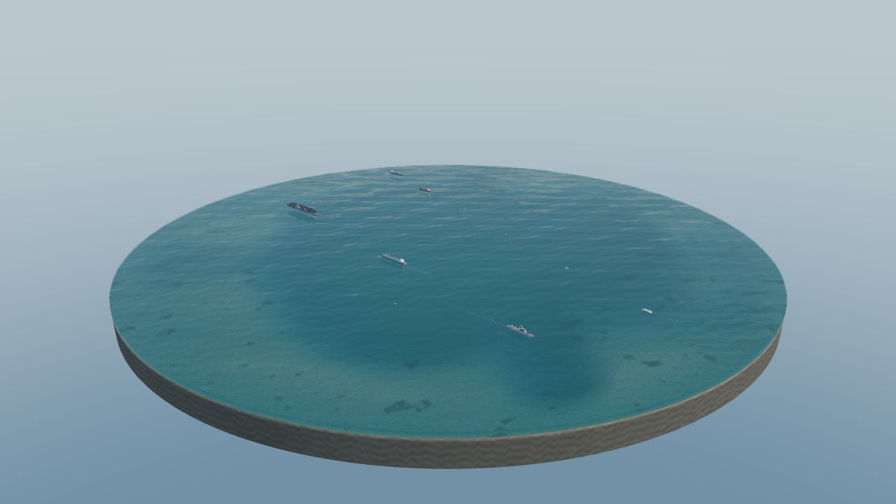

PelagicJavaScript · Three.js Cool ocean project, I guess.  An ocean simulation with changing weather, passing ships, and marine life.Live demoGitHub
WafflesLuau · Roblox Binary serialization for Roblox. Packs Luau values into native buffers, with schemas and guarded decoders.No runtime dependencies.GitHubDocumentation